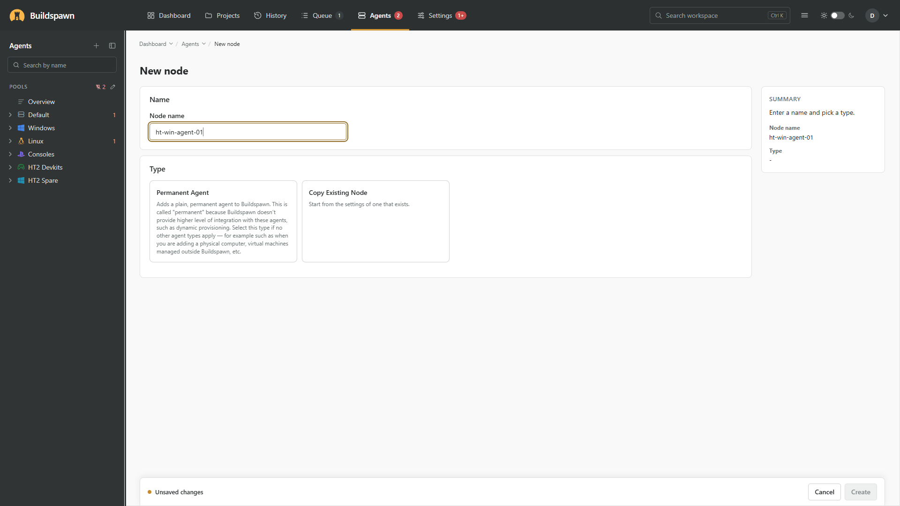
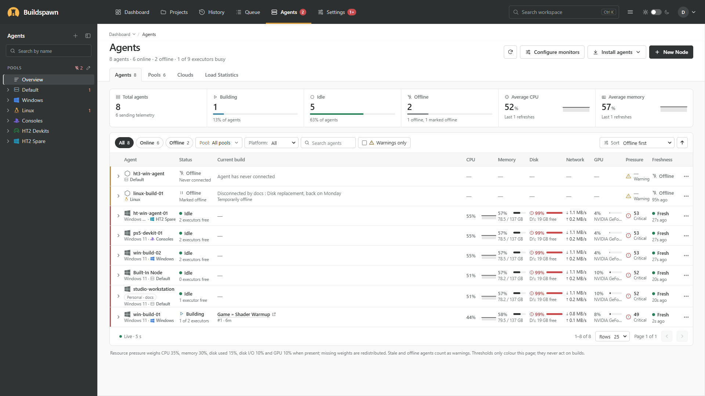

<!doctype html>
<html lang="en" data-root="../../">
<head>
<meta charset="utf-8">
<meta name="viewport" content="width=device-width, initial-scale=1">
<title>Add a Windows build agent · Buildspawn Guide</title>
<link rel="stylesheet" href="../../assets/site.css">
<script src="../../assets/search-index.js" defer></script>
<script src="../../assets/site.js" defer></script>
</head>
<body data-page="how-to/add-windows-agent">
<main class="doc">
<h1>Add a Windows build agent</h1>
<p class="lead">Turn a Windows machine into a build agent that starts with Windows and takes builds on its own.</p>

<h2>Before you start</h2>
<ul>
  <li>You are an administrator in Buildspawn and on the Windows machine.</li>
  <li>The machine can reach the server's address, for example <code>http://buildserver:8080/</code>.</li>
  <li>Nothing else needs to be installed: the download includes Java.</li>
</ul>

<h2>Steps</h2>
<ol class="steps">
  <li>Open <strong>Agents</strong> in the top bar and click <strong>New Node</strong>.</li>
  <li>In <strong>Node name</strong>, type the agent's name, for example <code>ht-win-agent-01</code>. Choose <strong>Permanent Agent</strong> and click <strong>Create</strong>.</li>
</ol>
<figure class="shot"><figcaption>Name the agent and choose Permanent Agent.</figcaption></figure>
<ol class="steps" start="3">
  <li>On the settings page, set <strong>Number of executors</strong> (how many builds it runs at once, for example <code>2</code>), <strong>Remote root directory</strong> (its work folder, for example <code>C:\buildspawn-agent\work</code>) and <strong>Labels</strong>, such as <code>windows win64</code>. Click <strong>Save</strong>.</li>
  <li>Open the new agent. It says <strong>Waiting for the agent to connect</strong>. Under <strong>Download the agent for this node</strong>, click <strong>Download</strong> on the <strong>Windows</strong> row.</li>
</ol>
<figure class="shot"><figcaption>This zip already holds the server address, the agent's name and its secret.</figcaption></figure>
<ol class="steps" start="5">
  <li>Copy the zip to the Windows machine and unzip it into <code>C:\</code>. You get the folder <code>C:\buildspawn-agent\</code>.
<pre><code>tar -xf buildspawn-agent-windows-x64-ht-win-agent-01.zip -C C:\</code></pre></li>
  <li>To try it first, double-click <code>run-agent.bat</code> in that folder. The agent stays connected while the window is open.</li>
  <li>To keep it running after you sign out and across restarts, close that window, open a command prompt <strong>as administrator</strong> in <code>C:\buildspawn-agent</code> and install the service:
<pre><code>install-service.bat</code></pre>
  The zip already holds the server address, so no options are needed. The service is called <strong>Buildspawn Agent</strong>. It starts at once and at every boot, and restarts itself if it stops.</li>
</ol>
<div class="callout tip"><p>To see what the service will run before you install it, add <code>--print</code>. It shows the service definition and changes nothing:</p>
<pre class="no-copy"><code>&lt;service&gt;
  &lt;id&gt;buildspawn-agent&lt;/id&gt;
  &lt;name&gt;Buildspawn Agent&lt;/name&gt;
  &lt;executable&gt;C:\buildspawn-agent\java\bin\java.exe&lt;/executable&gt;
  &lt;startmode&gt;Automatic&lt;/startmode&gt;
  &lt;onfailure action="restart" delay="10 sec"/&gt;
  ...
  &lt;logpath&gt;%BASE%\..\logs&lt;/logpath&gt;
&lt;/service&gt;</code></pre></div>
<div class="callout warning"><p>The zip holds this agent's secret. Give it only to the person who installs the agent. When the service is installed, only the system account and administrators can read the settings file.</p></div>

<h3>Optional: the tray app</h3>
<ol class="steps" start="8">
  <li>Open the <code>bin</code> folder and start <code>Buildspawn Agent.exe</code>. An icon appears next to the clock: green when idle, blue while it builds, amber when paused and red when offline.</li>
  <li>Right-click it for <strong>Pause</strong>, <strong>Open in browser</strong> and <strong>Show connection log</strong>. In its <strong>Settings</strong> tab, tick <strong>Open this app when I sign in to Windows</strong> and click <strong>Save</strong>. See <a href="../agents/windows-tray-app.html">Windows tray app</a>.</li>
</ol>
<div class="callout note"><p>The service runs as the system account. The tray app asks for administrator permission (<strong>Open as administrator</strong>) the first time it must control it.</p></div>

<h2>Check it worked</h2>
<ol class="steps">
  <li>Open <strong>Agents</strong>. The new agent's row shows <strong>Idle</strong> and its free executors, with live CPU, memory and disk values.</li>
  <li>The agent's own page shows <strong>Online</strong> instead of <strong>Never connected</strong>.</li>
  <li>On the machine, <strong>Services</strong> (<code>services.msc</code>) lists <strong>Buildspawn Agent</strong> as <strong>Running</strong>.</li>
</ol>
<figure class="shot"><figcaption>The new agent is online and sends telemetry.</figcaption></figure>

<h2>Troubleshooting</h2>
<table>
  <thead><tr><th>Problem</th><th>What to do</th></tr></thead>
  <tbody>
    <tr><td><code>install-service.bat</code> says <em>run this from an administrator prompt</em>.</td><td>Right-click <strong>Command Prompt</strong>, choose <strong>Run as administrator</strong>, go to <code>C:\buildspawn-agent</code> and run it again.</td></tr>
    <tr><td>The agent stays <strong>Never connected</strong>.</td><td>Read the files in <code>C:\buildspawn-agent\logs</code>. Check that the machine can open the server's address in a browser and that no firewall blocks it.</td></tr>
    <tr><td>Every build on the agent fails at once with a path error.</td><td>Check <strong>Remote root directory</strong> on the agent's <strong>Configure</strong> tab. It must be a full folder path, such as <code>C:\buildspawn-agent\work</code>.</td></tr>
    <tr><td>The service does not start and <code>logs</code> is empty.</td><td>Check that <code>binuildspawn-agent-service.xml</code> is there, then run <code>install-service.bat</code> again. It also repairs a service whose folder was moved.</td></tr>
    <tr><td>The tray app says <em>The agent isn't running</em>.</td><td>Read <code>logs
un-agent.log</code> (what the agent printed when the app started it) and <code>logs	ray.log</code> (errors of the app).</td></tr>
    <tr><td>The agent is online but runs no builds.</td><td>An agent runs only builds of the projects in its pool, and new agents join the <strong>Default</strong> pool. Move it with <strong>Move to pool…</strong> (see <a href="../agents/pools.html">Pools</a>).</td></tr>
  </tbody>
</table>
<p>To stop the service, run <code>stop-agent.bat</code>. To remove it, run <code>uninstall-service.bat</code> as administrator.</p>

<h2>Next steps</h2>
<ul>
  <li><a href="../agents/install-agent.html">Install an agent</a>: self-registration, approval and registration tokens.</li>
  <li><a href="../agents/windows-service.html">Agent service scripts</a> and <a href="admin-upgrade-agents.html">Upgrade agents</a>.</li>
  <li><a href="../agents/agent-settings.html">Agent settings</a>: labels, executors and disk thresholds.</li>
  <li><a href="add-linux-mac-agent.html">Add a Linux or macOS agent</a>.</li>
  <li><a href="set-up-console-pool.html">Create a pool for console devkits</a>.</li>
  <li><a href="watch-agent-health.html">Spot unhealthy agents</a>.</li>
</ul>
</main>
</body>
</html>
